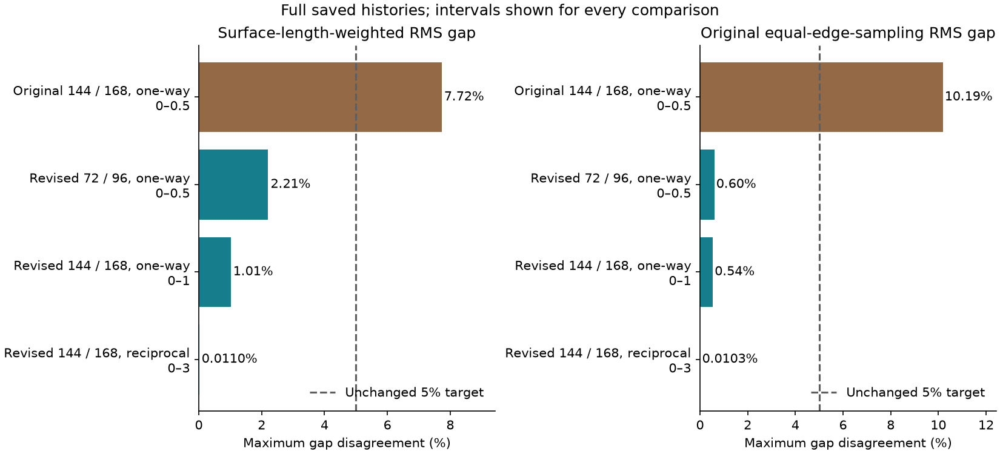
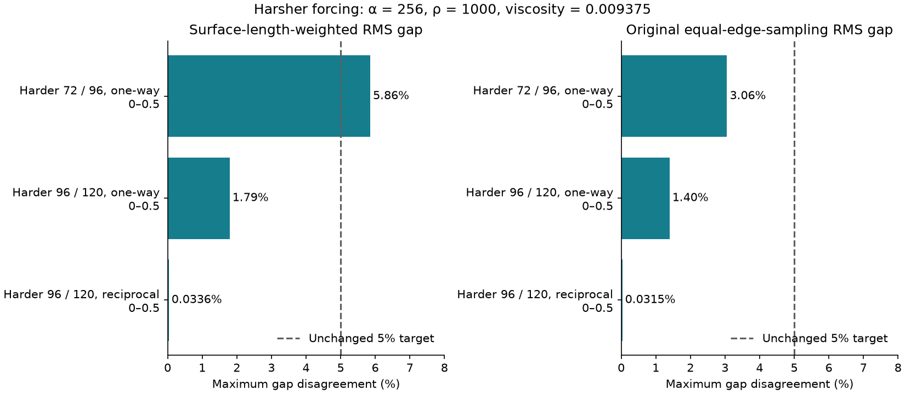
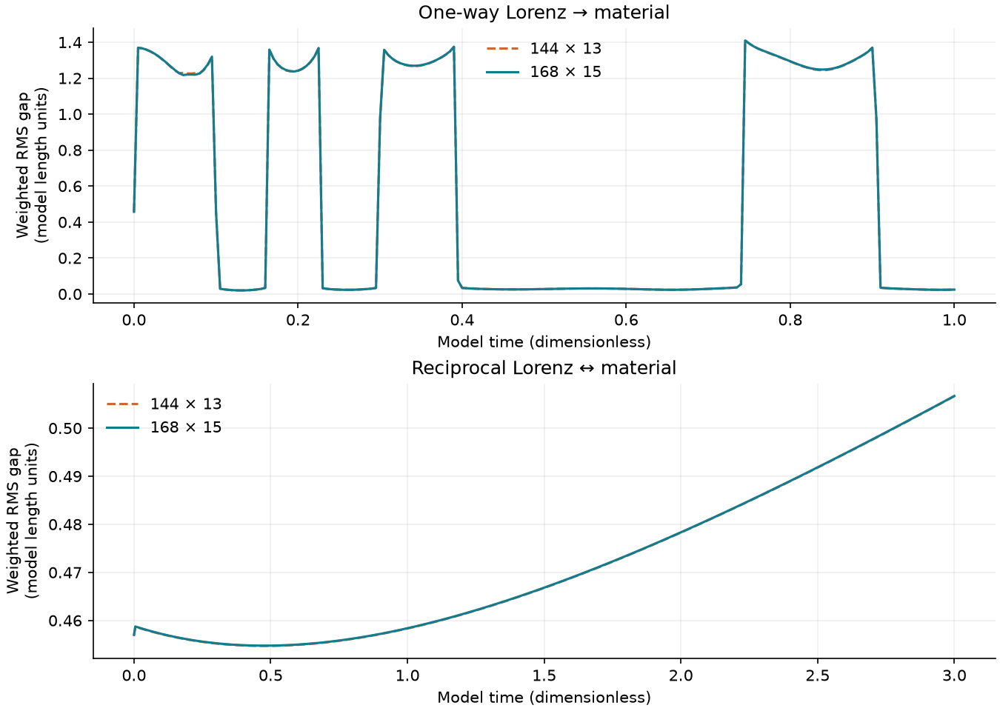
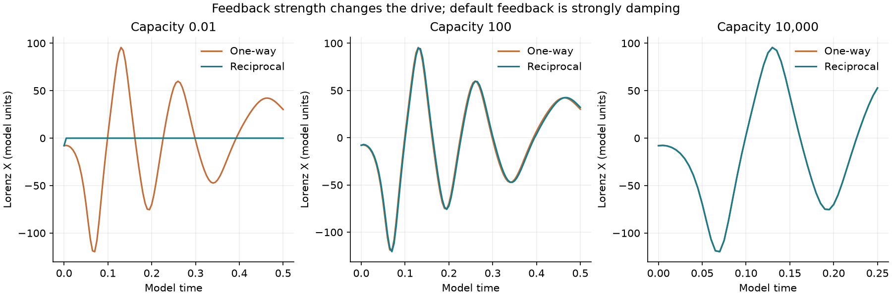

Hug: gap refinement and longer Lorenz tests
A fixed material length resists deformation concentrated into tiny regions. This is a proposed material revision; the original model and its unresolved results are preserved.
Actual saved states
Same model time in both panels. The display steps through selected recordings; it does not calculate new trajectories. Square guide ±2.2, all quantities in dimensionless model units.
One-way: Lorenz → hug
Reciprocal: Lorenz ↔ hug
Gap comparisons
Maximum disagreement at all common saved times, with the original 5% target and denominator retained. The displayed material revision changes the equations. Gap agreement does not establish convergence of imprint or every state variable.
| Comparison | Interval | Weighted gap max | Original gap max |
|---|




What the tests establish
The archive contains raw states, source hashes, failed attempts, mesh and time comparisons, and independent geometry and work-balance checks. Positive straight paths between accepted states are certified; dense implicit interpolation is not certified.
This two-dimensional abstract material has no real-clay calibration. Lorenz is an adopted dynamical drive. These tests do not solve a Navier–Stokes flow, prove its regularity, or demonstrate quantum effects.